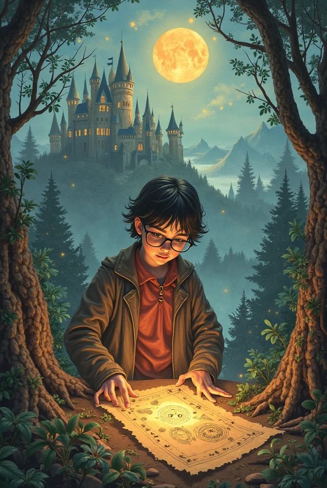
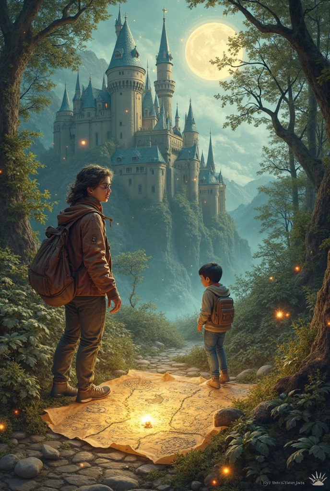
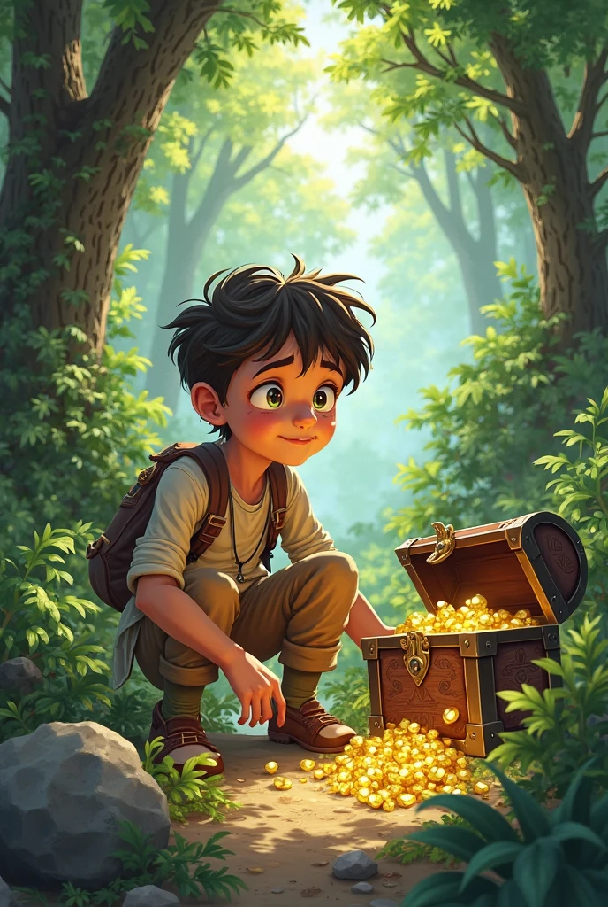

Um dia desses em uma caçada, encontrei um recepiente onde avia um mapa, fiquei bem curioso para saber do que se tratatava, abri e dei uma boa analizada, erra um tesouro escondindo, nesse tesouro avia um valor grande praquem achasse ele
Você começa sua jornada no Amapá, subindo a montanha Tumucumaque ao amanhecer para encontrar a primeira pista.
No Paraná, você irá visitar a cidade de Pérola D`Oeste. No mapa, uma das pistas indica que para localizar a entrada para achar o tesouro perdido você deverá escolher entre eles. Por qual você começa?
No topo da montanha Tumucumaque, você encontra uma antiga carta apontando que a próxima pista está localizada na Paraíba.

Você decide que quer encontra o tesouro e vai a procura.
No castelo abandonado, você descobre um mapa antigo escondido atrás de um altar, apontando que a próxima pista está na Paraíba.
Explorando as florestas você encontra um tigre e vc n tem saída.
Na paraíba, a busca pelo tesouro perdido se intensifica. Você se depara com um rio bifurcado.
De volta ao castelo, você finalmente encontra a carta antiga. Agora, para o Paraíba!
O rio à esquerda leva você a uma cachoeira escondida com inscrições antigas que revelam a entrada onde o tesouro perdido está.
O rio à direita termina em uma área pantanosa. Apesar de belas vistas, não há sinais de um tesouro perdido aqui.

Dentro do tesouro perdido, você descobre tesouros inimagináveis e decide se dedicar a estudar e preservar cada lugar onde você passou
Retornando e escolhendo o rio à esquerda, você finalmente encontra a cachoeira escondida e as inscrições que levam ao tesouro perdido.